Schritt für Schritt mit Bildern: Web-App und Discord-Bot auf einem eigenen Server aufbauen, mit Discord-Anmeldung, HTTPS, Bot-Einrichtung und dem ersten RSI-Sync. Du brauchst keine Programmierkenntnisse, aber du solltest auf einem Linux-Server Befehle eingeben können. Zeitaufwand: etwa 60 bis 90 Minuten, mit Twitch etwas mehr.
Der Community-Manager besteht aus drei Teilen, die zusammen in einem Docker-Stack laufen: der Web-App (app), der Datenbank (db)
und dem Discord-Bot (bot). Web-App und Bot nutzen dieselbe Datenbank. Davor steht ein Reverse-Proxy, der HTTPS übernimmt.
.env ausfüllen (Kapitel 4 und 5).LIZENZ.md
(in der App unter /lizenz).| Was | Hinweis |
|---|---|
| Ein Linux-Server oder eine VM (auch ein Container) | Mindestens 2 GB RAM und 5 GB Platz (die App ist auf 1 GB, der Bot auf 256 MB begrenzt, dazu kommt die Datenbank). Docker muss laufen (Version 24 oder neuer, mit dem Befehl docker compose). |
| Eine Domain oder Subdomain | Zum Beispiel hangar.example.de. Sie muss per DNS auf deinen Server bzw. deinen Reverse-Proxy zeigen. Discord verlangt HTTPS. |
| Ein Discord-Konto mit Admin-Rechten | Auf dem Server, der die Orga werden soll („Administrator“ oder „Server verwalten“). |
| Zugriff auf das Discord Developer Portal | Kostenlos, mit demselben Konto: https://discord.com/developers/applications |
| Optional: ein Twitch-Konto | Nur für die Live-Meldungen (Kapitel 13). |
Nichts davon kostet etwas, abgesehen vom Server und der Domain. Die Docker-Images sind öffentlich und kommen von ghcr.io/mackedanz.
| Deutsch | Englisch |
|---|---|
| App erstellen | New Application |
| Allgemeine Informationen | General Information |
| Anwendungs-ID | Application ID |
| Geheimen Schlüssel zurücksetzen | Reset Secret |
| Weiterleitungen | Redirects |
| Token zurücksetzen · Öffentlicher Bot | Reset Token · Public Bot |
| Interaktions-Endpunkt-URL | Interactions Endpoint URL |
| Installations-Link · Gildeninstallation | Install Link · Guild Install |
Gehe auf https://discord.com/developers/applications und melde dich an. Während dieses Teils sammelst du
drei Werte in einer Textdatei auf deinem Rechner. Du trägst sie später in die .env auf dem Server ein.
| Wert | Woher | Geheim? |
|---|---|---|
AUTH_DISCORD_ID | Allgemeine Informationen → Anwendungs-ID | nein |
AUTH_DISCORD_SECRET | OAuth2 → Geheimer Client-Schlüssel | ja |
DISCORD_BOT_TOKEN | Bot → Token | ja |
Geheime Werte gehören nur in die .env auf dem Server. Nicht in Chats, E-Mails, Bilder oder ein Repository.
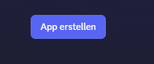
Trage einen Namen ein, zum Beispiel Community-Manager. Der Name erscheint später als Name des Bots und bei der Anmeldung. Setze den Haken bei den Nutzungsbedingungen (das bestätigst du selbst) und klicke auf Erstellen.
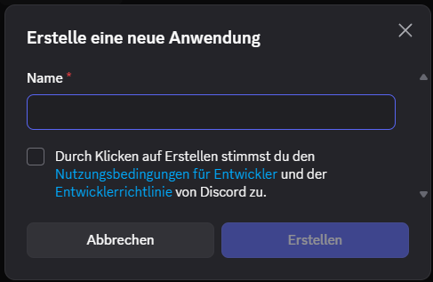
Es öffnet sich die Seite Allgemeine Informationen. Kopiere mit dem Knopf Kopieren die Anwendungs-ID in deine Textdatei. Den Öffentlichen Schlüssel brauchst du nicht. Das Feld „Interaktions-Endpunkt-URL“ bleibt leer: Die Befehle empfängt der Bot selbst über seine Verbindung zu Discord. Steht dort eine Adresse, kommen die Befehle nicht beim Bot an.
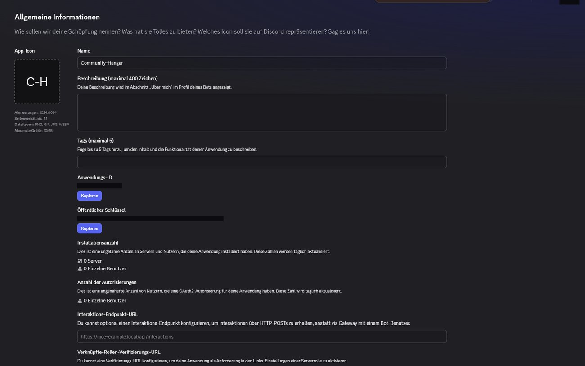
Öffne im Menü links OAuth2.
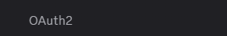
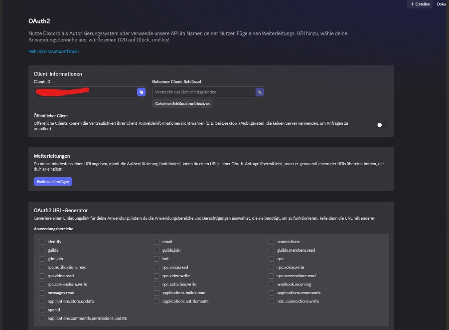
AUTH_DISCORD_SECRET.https://hangar.example.de/api/auth/callback/discord.
Die Adresse muss exakt so lauten, ohne Leerzeichen und ohne Schrägstrich am Ende. Statt hangar.example.de steht deine Adresse.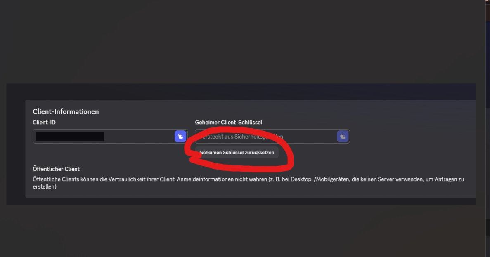
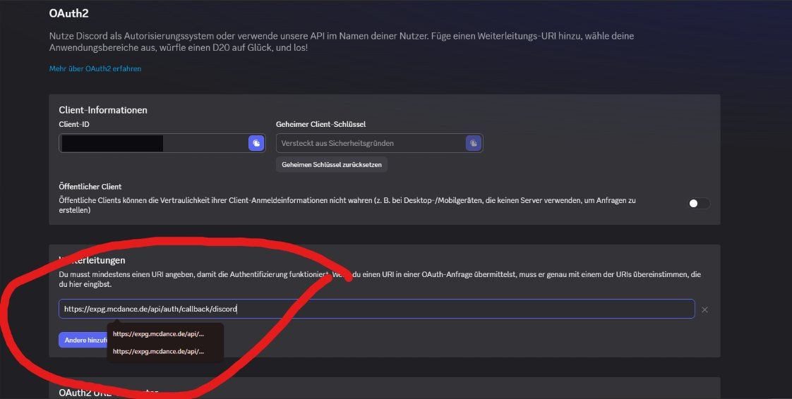
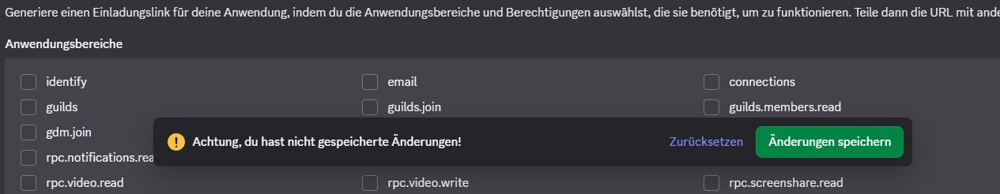
Bei einem privaten Bot verlangt Discord, dass es keinen Standard-Einladungslink gibt. Stelle das deshalb vor den Bot-Einstellungen ein. Sonst meldet das Portal beim Speichern des privaten Bots: „Private Anwendungen können keinen Standard-Autorisierungslink haben“.
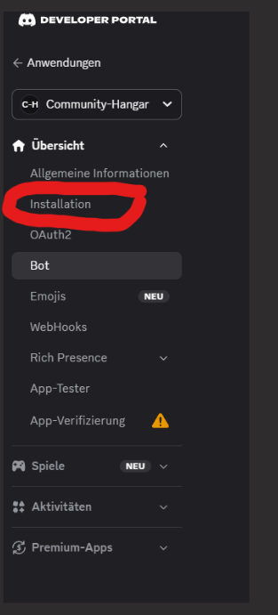
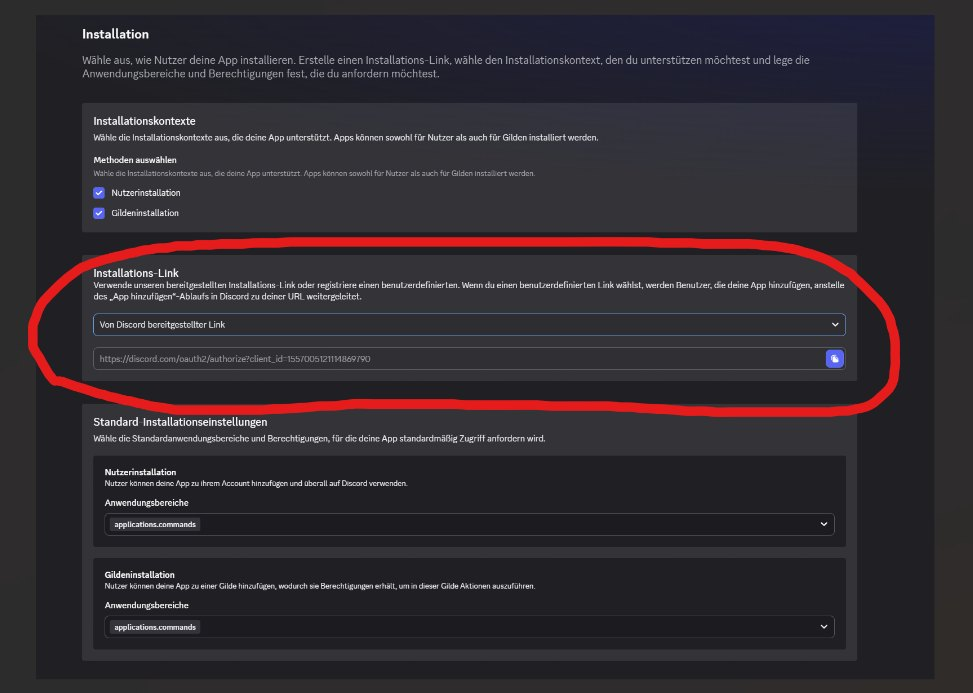
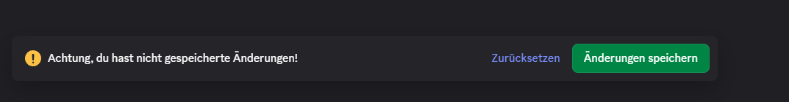
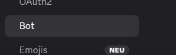
DISCORD_BOT_TOKEN.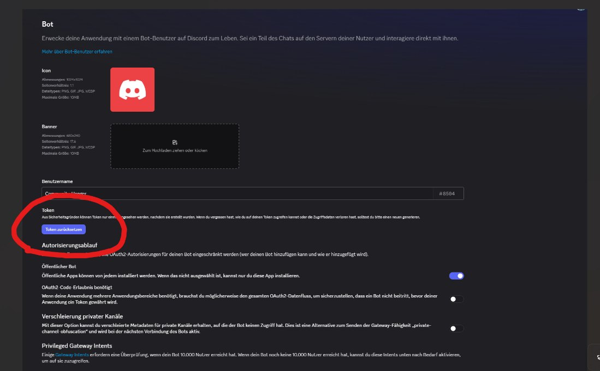
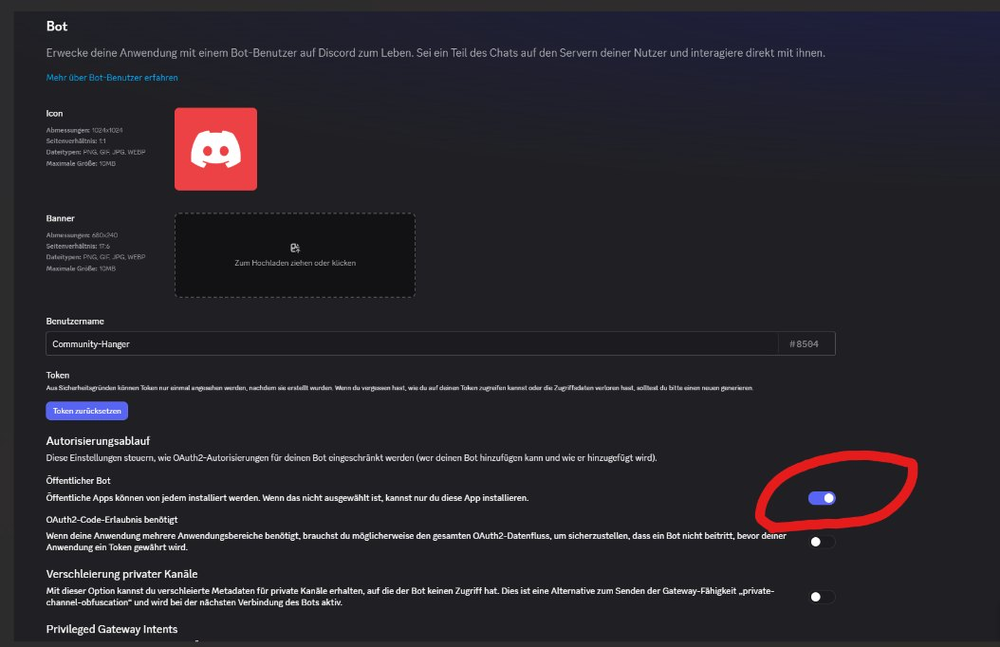
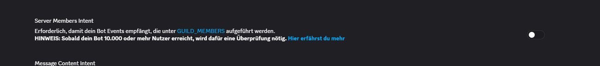
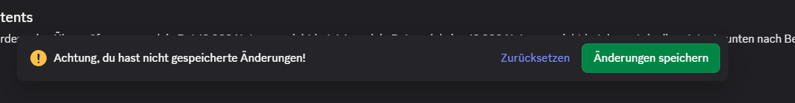
Zwei weitere Zahlen brauchst du aus Discord selbst. Schalte dazu in Discord unter Einstellungen → Erweitert den Entwicklermodus ein.
SERVER_ADMIN_DISCORD_ID, damit erhältst du Zugang zum Bereich „Server-Admin“): Rechtsklick auf dein Profil → Nutzer-ID kopieren.ONBOARDING_GUILD_IDS, nur dieser Server darf eine Orga anlegen): Rechtsklick auf den Server → Server-ID kopieren.Melde dich auf deinem Server an (wie das geht, weißt du selbst am besten) und gib die folgenden Befehle der Reihe nach ein.
mkdir -p ~/community-manager && cd ~/community-manager
mkdir -p ~/community-manager legt den Ordner community-manager in deinem Benutzerverzeichnis an. -p verhindert einen Fehler, falls es ihn schon gibt.&& führt den nächsten Befehl nur aus, wenn der erste geklappt hat.cd ~/community-manager wechselt in diesen Ordner. Alle weiteren Befehle laufen dort.curl -O https://raw.githubusercontent.com/mackedanz/Community-Manager/main/docker-compose.yml
curl lädt eine Datei aus dem Internet, -O speichert sie unter ihrem Namen. Die Datei beschreibt, welche Container Docker startet (die App, die Datenbank und den Discord-Bot) und welche Daten sie behalten.
Fehlt curl („command not found“), installiere es mit sudo apt install curl.
curl -o .env https://raw.githubusercontent.com/mackedanz/Community-Manager/main/.env.docker.example
-o .env (kleines o) speichert die Vorlage unter dem Namen .env. Diese Datei enthält später deine Einstellungen und Geheimnisse. Sie beginnt mit einem Punkt und ist deshalb
unsichtbar; ls -la zeigt sie.
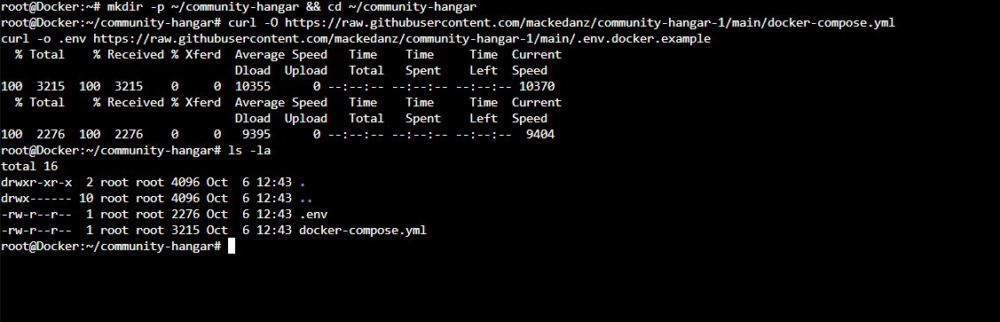
docker-compose.yml ist jetzt deine eigene Kopie. Ändere sie nicht, ihre Werte kommen alle aus der .env. Eigene Ergänzungen (etwa Caddy oder ein offener Datenbank-Port)
gehören in eine zweite Datei docker-compose.override.yml, die Docker automatisch mitliest. Wie du die Kopie bei Updates prüfst, steht in Kapitel 15.nano .env
Die Vorlage enthält Erklärungen zu jeder Zeile. Einige Zeilen sind auskommentiert (# am Anfang). Entferne dort das #, wenn du sie brauchst, sonst werden sie ignoriert.
| Zeile | Wert |
|---|---|
DOMAIN= | deine Adresse ohne https://, z. B. hangar.example.de |
AUTH_DISCORD_ID= | Anwendungs-ID |
AUTH_DISCORD_SECRET= | Geheimer Client-Schlüssel |
APP_KEY= | Schlüssel für die gespeicherten Discord-Tokens. Erzeugen mit openssl rand -base64 32, sichern, nie wieder ändern |
DB_PASSWORD= | frei wählbar, lang und zufällig. Erzeugen mit: openssl rand -base64 24 | tr -d '/+=' |
SERVER_ADMIN_DISCORD_ID= | deine Discord-ID |
COMPOSE_PROFILES= | bot (startet den Discord-Bot; # entfernen) |
DISCORD_BOT_TOKEN= | Bot-Token (# entfernen) |
ONBOARDING_GUILD_IDS= | Server-ID deines Discord-Servers (# entfernen) |
LOGIN_REQUIRES_ALLOWLIST= | erst einmal 0 lassen, später auf 1 (siehe Warnung unten) |
Die Zeilen BOT_MESSAGE_CONTENT (Kapitel 12) und TWITCH_CLIENT_ID/TWITCH_CLIENT_SECRET (Kapitel 13) trägst du später ein. Eine Übersicht aller Einstellungen steht im Anhang.
Tipps zu nano: Mit den Pfeiltasten navigieren, die Maus funktioniert nicht. Zum Einfügen aus der Zwischenablage je nach Terminal Rechtsklick oder Strg+Umschalt+V.
Werte stehen direkt hinter dem =, ohne Leerzeichen und ohne Anführungszeichen. Speichern mit Strg+O und Enter, beenden mit Strg+X.
Die Umlaute in den Kommentaren sehen im Terminal manchmal kaputt aus: Das ist nur die Darstellung.
So sieht der wichtigste Teil der ausgefüllten Datei aus (mit erfundenen Werten):
DOMAIN=hangar.example.de AUTH_DISCORD_ID=123456789012345678 AUTH_DISCORD_SECRET=abcdEFGHijklMNOPqrstUVWXyz012345 APP_KEY=Zk3x0b1gJ9mQ2vN7cLw5eT8uYhD4aRfS6oPiKtXn1Bs= DB_PASSWORD=q7Hn2LmX9vTrB4dK8sWc3yZp SERVER_ADMIN_DISCORD_ID=234567890123456789 COMPOSE_PROFILES=bot DISCORD_BOT_TOKEN=MTIzNDU2Nzg5MDEyMzQ1Njc4.GabCdE.exampleTokenNotReal ONBOARDING_GUILD_IDS=345678901234567890 LOGIN_REQUIRES_ALLOWLIST=0
LOGIN_REQUIRES_ALLOWLIST=1 löscht jeder Abgleich der Mitgliederliste das Konto samt Hangar von allen,
die nicht mehr auf einer Zugangsliste stehen. Du selbst bist über SERVER_ADMIN_DISCORD_ID immer ausgenommen. Mit 0 ist die Sperre aus.
Als Bremse löscht ein Abgleich nichts, wenn auf einmal mindestens 5 Personen und mehr als die Hälfte der Liste wegfallen. Dann prüfst du die Liste und löschst bei Bedarf mit
docker compose exec app php bin/purge-former-members.php --yes. Schalte die Sperre erst ein, wenn die Zugangsliste gefüllt ist (Kapitel 9).Danach darf nur noch der Besitzer die Datei lesen. Der Befehl gibt bei Erfolg nichts aus.
chmod 600 .env
Mit diesem Befehl prüfst du, ob alle Zeilen gefüllt sind. Er zeigt von jedem Wert nur die ersten drei Zeichen:
sed -E 's/=(.{3}).*/=\1…/' .env | grep -v '^#' | grep -v '^$'
Alle Pflichtzeilen müssen einen Wert haben. Nur LEGAL_IMPRINT_URL und LEGAL_PRIVACY_URL (Links zu Impressum und Datenschutzerklärung) dürfen leer bleiben.
Die App spricht nur HTTP. Davor muss ein Reverse-Proxy HTTPS und das Zertifikat übernehmen. Dafür gibt es zwei Wege. Nimm den, der zu deinem Server passt:
| Variante | Wann |
|---|---|
| A: Caddy mitstarten | Du hast noch keinen Proxy. Die Ports 80 und 443 des Servers sind aus dem Internet erreichbar. Caddy holt das Zertifikat selbst. |
| B: vorhandener Proxy | Auf deinem Server oder im Netz läuft schon ein Proxy, z. B. der Nginx Proxy Manager. Er leitet auf Port 8181 der App weiter. |
Lege neben der docker-compose.yml die Datei docker-compose.override.yml an (nano docker-compose.override.yml). Docker liest sie automatisch mit:
services:
caddy:
image: caddy:2-alpine
restart: unless-stopped
command: caddy reverse-proxy --from ${DOMAIN} --to app:80
ports:
- "80:80"
- "443:443"
volumes:
- caddy-data:/data
volumes:
caddy-data:
Die Domain muss per DNS schon auf den Server zeigen. Setze zusätzlich HANGAR_BIND=127.0.0.1 in der .env, dann ist der Port 8181 nur noch auf dem Server selbst offen und die App nur über Caddy erreichbar.
Die docker-compose.yml gibt den Port 8181 auf dem Server frei (änderbar mit HANGAR_PORT). Prüfe vorher, dass er frei ist: ss -ltn | grep 8181 (keine Ausgabe = frei).
Der Port hört standardmäßig auf allen Schnittstellen. Läuft der Proxy auf demselben Server, setze HANGAR_BIND=127.0.0.1 in der .env. Steht der Proxy auf einem anderen Rechner, erlaube Port 8181 per Firewall nur für dessen IP (Kapitel 16).
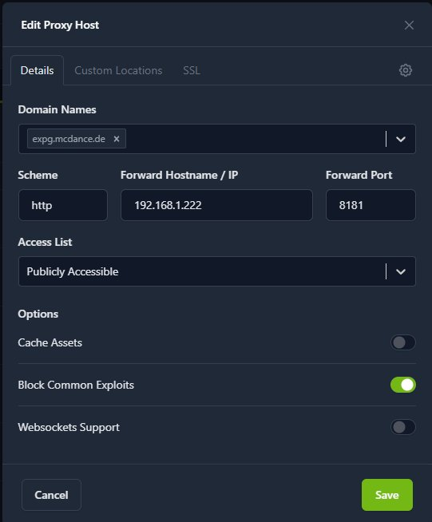
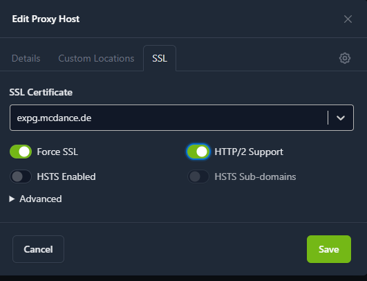
Bis der Container läuft, zeigt die Domain 502 Bad Gateway. Das ist normal.
docker compose up -d
Docker legt Netzwerk, Volumes und Container an. „Waiting“ bei der Datenbank ist normal, die App startet, sobald sie bereit ist.
Die Volumes db-data (Datenbank) und ship-images (Schiffsbilder, Logo, Hintergrund) sind die dauerhaften Daten.
Beim ersten Mal lädt Docker außerdem die Images herunter, das dauert deutlich länger.
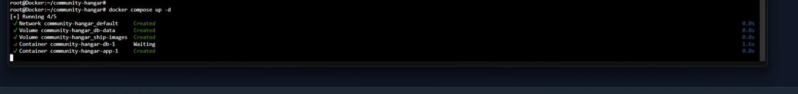
docker compose logs --tail 40 app
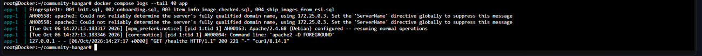
Nach etwa 20 Sekunden beginnt im Hintergrund der Abgleich des Schiffskatalogs aus der RSI Ship Matrix (ein bis zwei Minuten).
Dann das Protokoll des Bots:
docker compose logs --tail 20 bot
Dort müssen „Datenbank verbunden …“ und „Angemeldet als …“ stehen. Fehlt der Bot ganz, steht COMPOSE_PROFILES=bot nicht (oder mit #) in der .env.
Meldet er, dass Discord den Zugriff auf Mitglieder verweigert, ist der Server Members Intent aus (Kapitel 3.5). Die Hinweise zu Automod und Twitch im Protokoll sind beim ersten Start normal.
Öffne im Browser https://hangar.example.de/healthz. Dort muss ok stehen. Erst wenn das klappt, geht es mit Discord weiter.
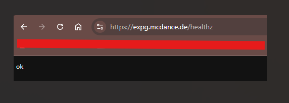
docker compose exec bot node src/register.js --global
Erscheint „… Befehl(e) registriert für alle Server: /einrichten, /design, …“, kennt Discord alle Slash-Befehle des Bots. Nach einem Update mit neuen Befehlen führst du diesen Befehl noch einmal aus.
Öffne diesen Link im Browser und ersetze <DEINE CLIENT-ID> durch deine eigene ID:
https://discord.com/oauth2/authorize?client_id=<DEINE CLIENT-ID>&scope=bot%20applications.commands&permissions=19009928424534
Die Client-ID findest du im Developer Portal unter OAuth2 im Feld Client-ID. Das ist dieselbe Zahl wie die Anwendungs-ID.
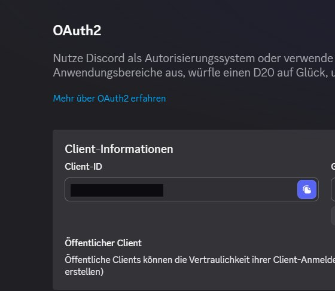
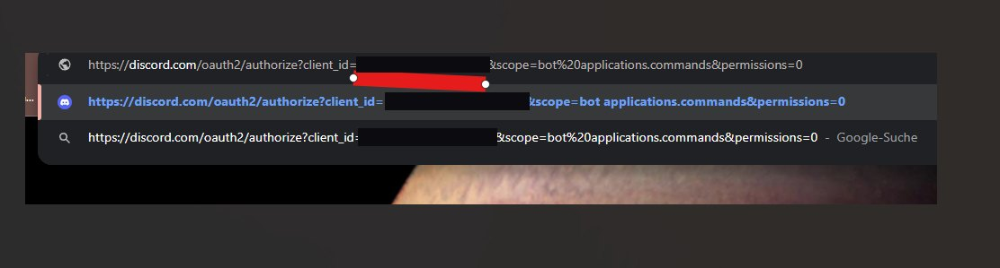
Wähle im Dropdown deinen Server. Es erscheinen nur Server, auf denen du das Recht „Server verwalten“ hast. Wähle den Server, dessen ID du in ONBOARDING_GUILD_IDS eingetragen hast.
Eine eventuelle Captcha-Abfrage bestätigst du selbst.
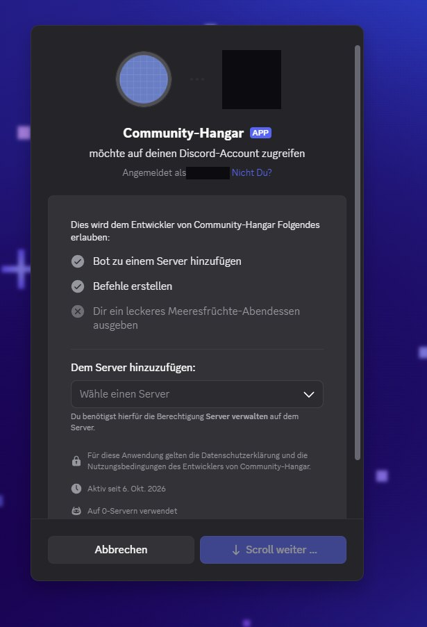
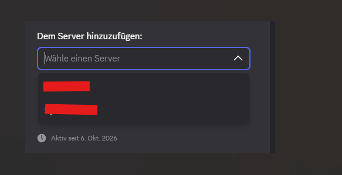
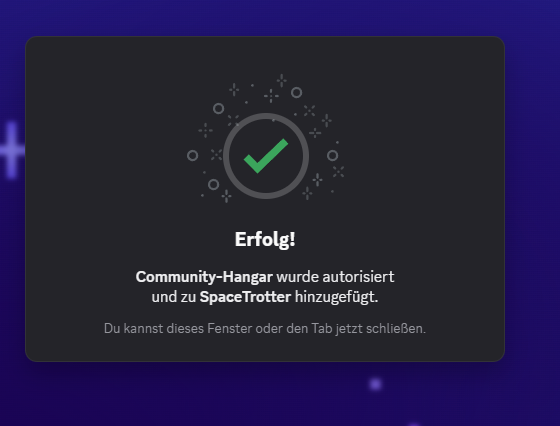
Der Bot erscheint in der Mitgliederliste des Servers und ist online, solange sein Container läuft.
Der Link gibt dem Bot die Rechte für alle Funktionen: Kanäle ansehen, Nachrichten senden (auch in Threads), öffentliche Threads erstellen, Links einbetten, Dateien anhängen, Nachrichtenverlauf lesen, Reaktionen und externe Emojis, @everyone und alle Rollen erwähnen, Rollen verwalten, Spitznamen verwalten, Events erstellen und verwalten, dazu für die Moderation Mitglieder kicken, bannen und moderieren (Timeout), Nachrichten verwalten und für das Discord-Setup Kanäle verwalten. Administrator und „Server verwalten“ bekommt er bewusst nicht. Wer die Moderation und das Discord-Setup nicht nutzen will, kann im Developer Portal unter OAuth2 → URL-Generator einen eigenen Link mit weniger Rechten bauen.
Discord legt für den Bot eine Rolle mit seinem Namen an. Der Bot kann nur Rollen vergeben, ändern und moderieren, die in der Liste unter seiner Rolle stehen. Ziehe sie unter Servereinstellungen → Rollen direkt unter die Führungsrollen, aber unter die Admin-Rolle.
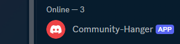
Tippe in Discord in einem beliebigen Kanal /einrichten (als Admin oder mit „Server verwalten“). Erscheint der Befehl nicht, lade Discord mit Strg+R neu; es kann ein paar Minuten dauern.
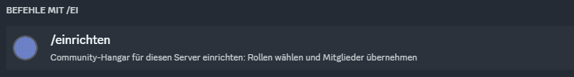
Der Befehl hat ein Pflichtfeld rsi_kuerzel: das Kürzel deiner Orga auf RSI (zum Beispiel EXPG). Gibt es keine RSI-Orga, trägst du - ein.
Mit der Option handle_stil legst du fest, wo im Server-Nickname der RSI-Handle steht (Standard: außerhalb aller Klammern).
Es erscheint eine Nachricht, die nur du siehst. Die Orga wird mit dem Servernamen angelegt, du stehst automatisch auf der Zugangsliste. Die Nachricht hat fünf Rollenauswahlen:
| Auswahl | Wer |
|---|---|
| Wer darf das Tool nutzen? | Alle Rollen, deren Mitglieder sich in der Web-App anmelden dürfen (bis zu 10) |
| Wer darf Events planen? | Planer (optional) |
| Wer sind die Recruiter? | Sehen die RSI-Zugehörigkeit (optional); wer /recruit nutzen darf, stellst du unter „Recruiting“ ein |
| Wer sind die Ausbilder? | Pflegen die Ausbildung (optional) |
| Wer sind die Abteilungsleiter? | Pflegen die Abteilungen (optional) |
/einrichten mit den fünf Rollenauswahlen (nur für dich sichtbar).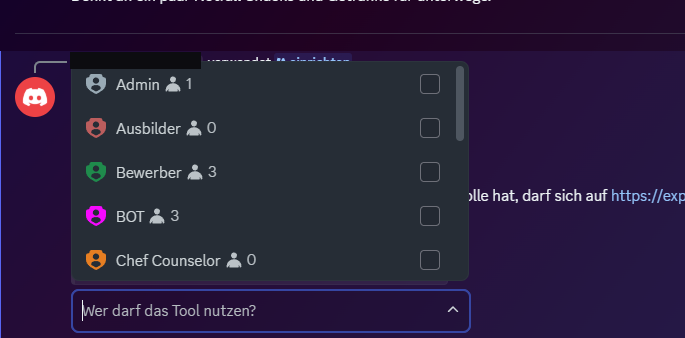
Der Befehl lässt sich beliebig oft wiederholen. Der Bot gleicht außerdem automatisch ab, sobald jemand dem Server beitritt, ihn verlässt, eine Rolle bekommt oder verliert, und die App zusätzlich einmal pro Stunde.
Wer die Rolle bekommt, darf sich anmelden. Wer sie verliert, darf es nicht mehr (laufende Sitzungen enden sofort, sein Konto wird gelöscht, sobald LOGIN_REQUIRES_ALLOWLIST=1 gilt).
Mit /abgleichen kann jede Person mit einer Nutzungs-Rolle (und jeder Server-Admin) sofort abgleichen.
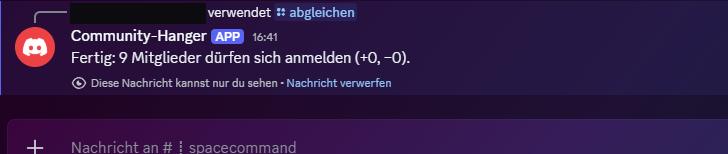
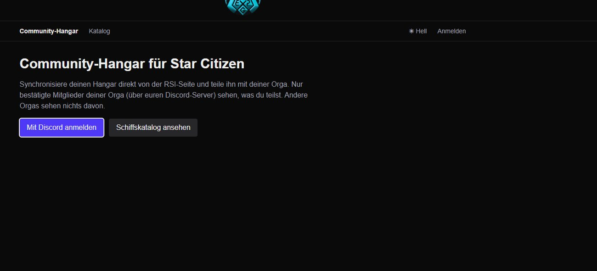
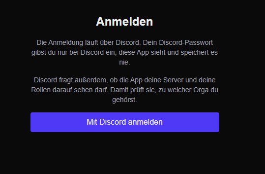
Discord zeigt eine Abfrage. Sie nennt die Zugriffe auf Benutzername und Avatar, auf die Server, auf denen du bist, und auf deine Mitgliedsinformationen (Nickname, Avatar, Rollen). Damit prüft die App, zu welcher Orga du gehörst. Die E-Mail-Adresse wird nicht abgefragt. Scrolle nach unten, bis „Autorisieren“ aktiv wird, und bestätige selbst.
Nach der Anmeldung siehst du deine Orga. Den Bereich „Server-Admin“ sehen nur Personen, die als SERVER_ADMIN_DISCORD_ID eingetragen sind.
Ein Mitglied ohne Rolle sieht stattdessen: „Dieses Discord-Konto steht nicht auf der Zugangsliste.“
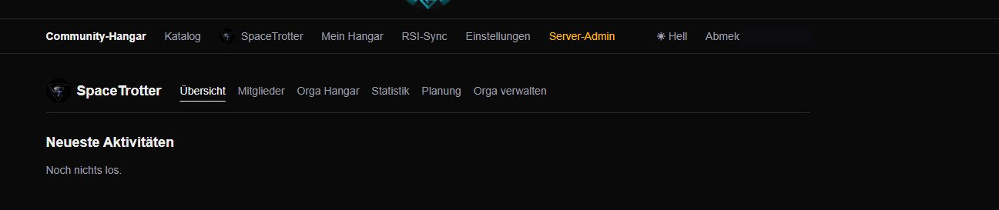
Ist die Zugangsliste gefüllt und stimmt, kannst du LOGIN_REQUIRES_ALLOWLIST=1 in der .env setzen und mit docker compose up -d übernehmen.
Die meisten Einstellungen des Bots machst du nicht mit Befehlen, sondern in der Web-App. Sie wirken sofort, ohne Neustart. Die Seite sehen nur Orga-Admins: Auf der Startseite der Orga gibt es die Kachel Discord-Bot. Sie zeigt, wie viele der sechs Bereiche eingerichtet sind. Hinter jedem eingerichteten Bereich steht links im Menü ein Leuchtpunkt.
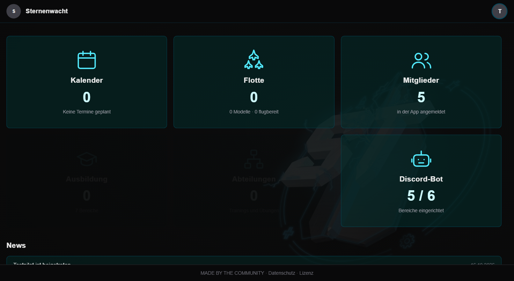
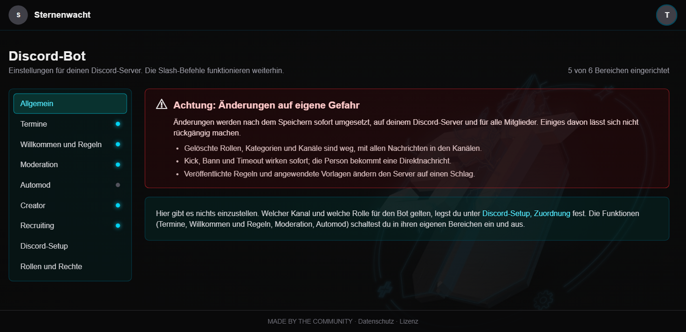
| Bereich | Was du dort tust |
|---|---|
| 1. Discord-Setup | Kategorien, Kanäle und Rollen anlegen: entweder selbst (Server aufbauen) oder mit einer fertigen Vorlage, die vor dem Anwenden eine Vorschau zeigt. Vorhandenes bleibt unangetastet. |
| 2. Zuordnung | Dem Bot sagen, welcher Kanal wofür gilt (Termine, Willkommen, Regeln, Protokoll, Bot-Einstellungen) und welche Rolle die Besucher-Rolle ist. Nach dem Aufbau trägt die Seite Vorschläge nach den Namen ein, die du prüfst und mit „Speichern“ übernimmst. |
| 3. Termine | Den Ankündigungskanal wählen. Der Bot kündigt Termine dort an, erinnert 24 Stunden und 1 Stunde vorher und lässt Plätze per Knopf wählen. Ohne Kanal kündigt er nichts an. |
| 4. Willkommen und Regeln | Willkommenskanal, Regelkanal und Begrüßungstext einstellen (Platzhalter {user}, {server}, {regeln}). Unter „Regeln veröffentlichen“ postest du die Regeln mit dem Knopf „Bestätigen“, der die Besucher-Rolle vergibt. |
| 5. Moderation | Moderatoren-Rollen und Protokollkanal festlegen. Unter „Fälle und Maßnahmen“ verwarnst du, setzt Timeouts, kickst und bannst, mit Fallliste und Suche. |
| 6. Automod | Regeln gegen Spam, Einladungslinks, Links, verbotene Wörter und Massen-Erwähnungen einzeln einschalten. Braucht Kapitel 12. |
| 7. Creator | YouTube-Kanäle (neue Videos) und Twitch-Kanäle (Live-Meldungen) mit Zielkanal und optional einer Rolle zum Erwähnen eintragen. Twitch braucht Kapitel 13. |
| 8. Recruiting | Kanal für die Übersichten von /recruit, berechtigte Rollen und den Fragenkatalog (bis 25 Fragen) festlegen. |
| Rollen und Rechte | Rollen anlegen, ändern und löschen, mit einem festen Katalog an Rechten und Vorlagen für Gast, Mitglied und Moderator. Administrator, „Server verwalten“, „Rollen verwalten“ und Webhooks gibt es dort mit Absicht nicht. Die Rechte einzelner Rollen in einem Kanal stellst du über „Discord-Setup“ ein. |
Die Orga-Rollen (Mitglied, Planer, Recruiter, Ausbilder, Abteilungsleiter) stellst du nicht hier ein, sondern in der Web-App unter „Orga verwalten“ (oder mit /einrichten).
Sie bestimmen, wer in der Web-App was darf.
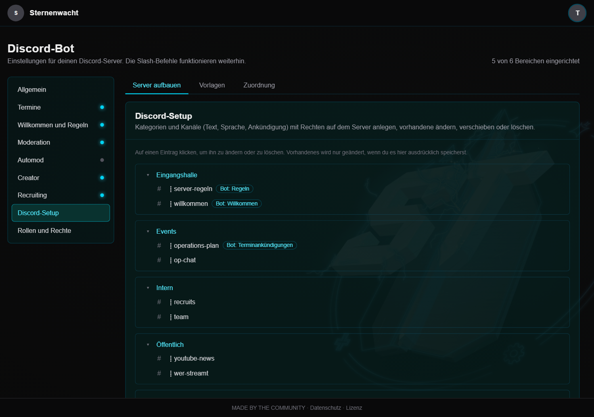
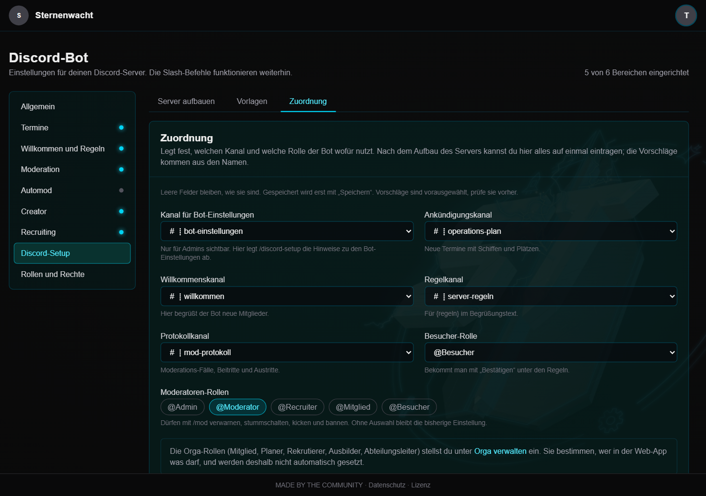
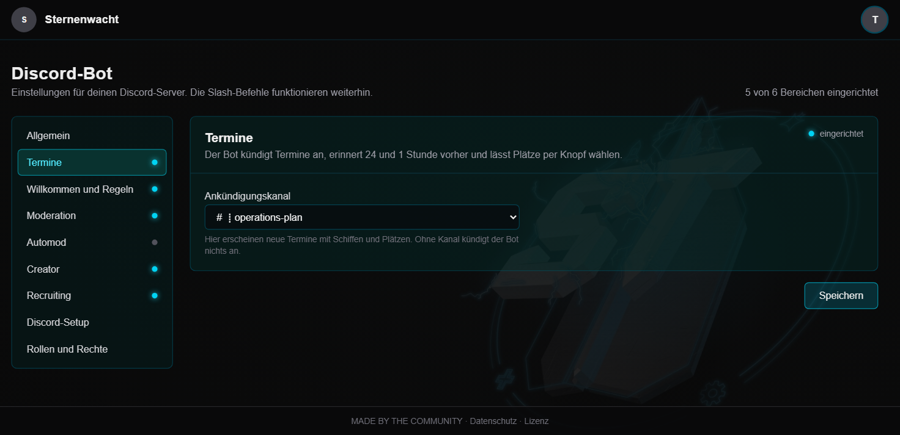
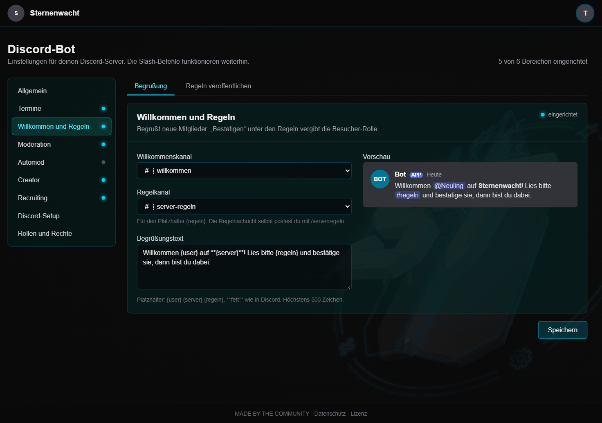
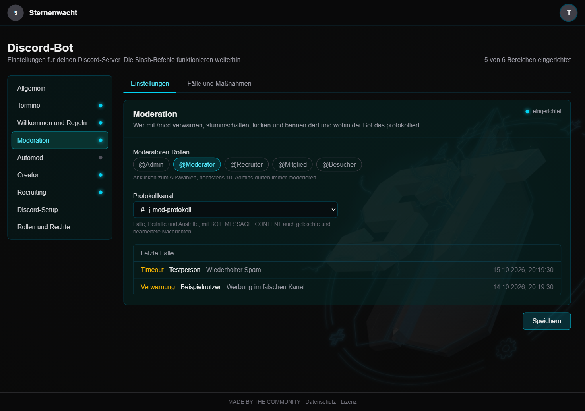
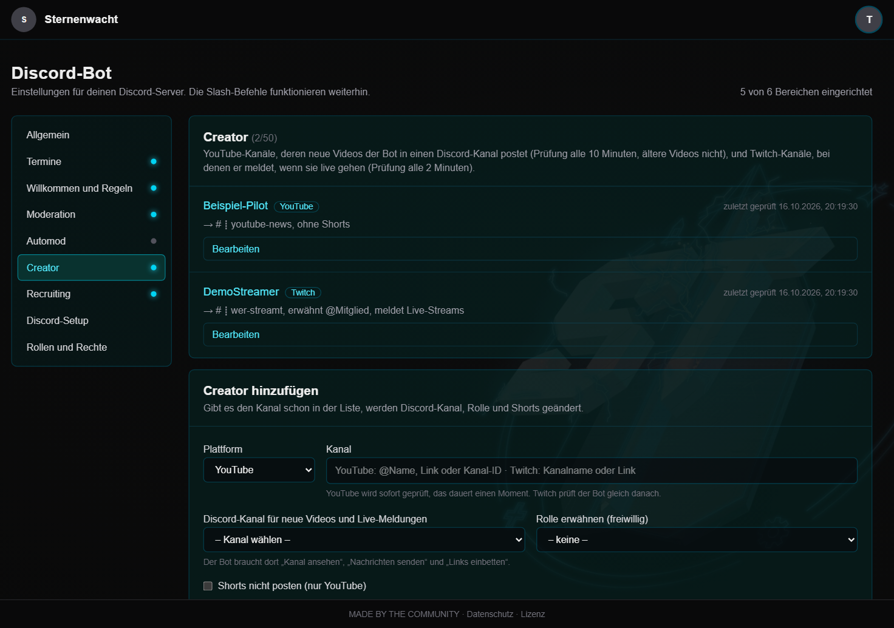
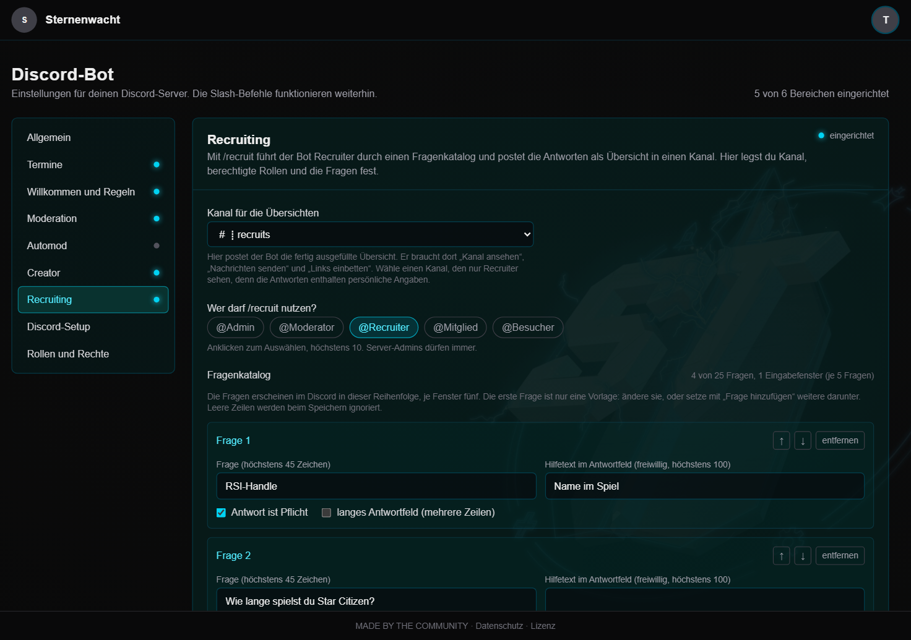
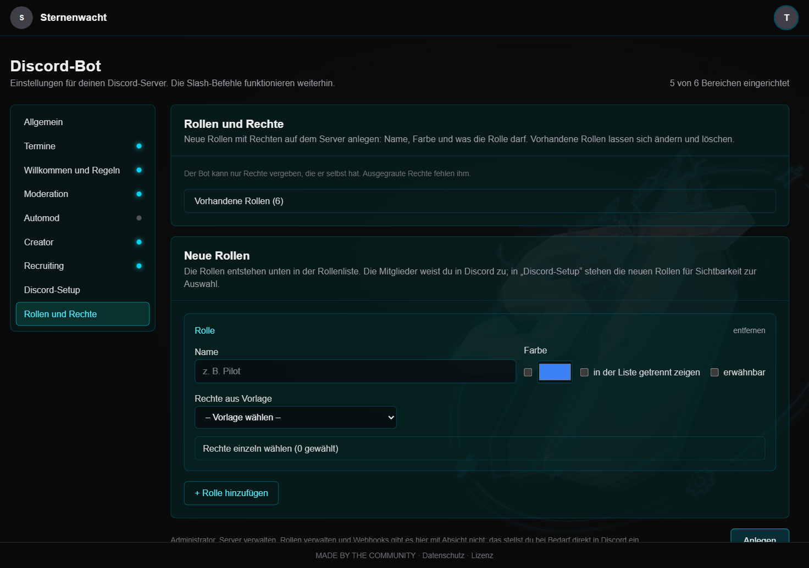
DISCORD_BOT_TOKEN in der .env, oder der Bot ist nicht auf dem Server (Kapitel 8).
Gespeicherte Werte bleiben dabei erhalten.Automod und das Nachrichten-Protokoll (gelöschte und geänderte Nachrichten) müssen Nachrichten lesen können. Dafür verlangt Discord einen eigenen, privilegierten Intent. Ohne ihn läuft der Bot wie gewohnt, nur ohne diese beiden Funktionen. Die Seite „Automod“ in der Web-App zeigt dann einen Hinweis.
.env die Zeile BOT_MESSAGE_CONTENT=1 eintragen.docker compose up -d botEin einfaches
docker compose restart bot reicht nicht, es liest die .env nicht neu ein.docker compose logs --tail 20 bot darf keine Meldung zu den Intents zeigen. In der Web-App steht bei „Automod“, dass der Bot Nachrichten mitliest.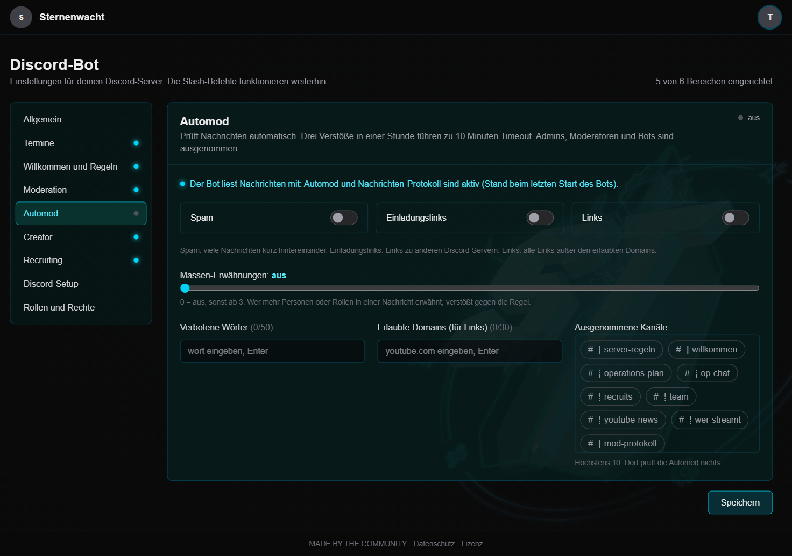
Der Bot kann melden, wenn ein Twitch-Kanal live geht: „Name ist live auf Twitch: Titel (Spiel)“ mit Link, auf Wunsch mit Erwähnung einer Rolle. Er fragt Twitch alle 2 Minuten für alle eingetragenen Kanäle zugleich ab. Jeder Stream wird nur einmal gemeldet, auch nach einem Neustart. Dafür braucht der Bot eine eigene Twitch-Anwendung.
https://dev.twitch.tv/console und melde dich mit deinem Twitch-Konto an. Twitch kann für das Registrieren einer Anwendung die Zwei-Faktor-Anmeldung verlangen.http://localhost ein und wähle als Kategorie zum Beispiel Chat Bot..env ein:
TWITCH_CLIENT_ID=deine-client-id TWITCH_CLIENT_SECRET=dein-client-geheimnis
docker compose up -d bot
Ohne beide Werte meldet der Bot kein Twitch. Die Creator-Seite zeigt dann den Hinweis „Twitch ist im Bot noch nicht eingerichtet“, eintragen kannst du Kanäle trotzdem schon.
Ein Kanal, der beim Eintragen schon live ist, meldet sich erst mit dem nächsten Stream. Nach einem Verbindungsabbruch gibt es innerhalb von 30 Minuten keine zweite Meldung.
Der Slash-Befehl /creator trägt nur YouTube-Kanäle ein, zeigt in seiner Liste aber alle an.
Jedes Mitglied überträgt seinen Hangar von der RSI-Seite. Öffne oben RSI-Sync.
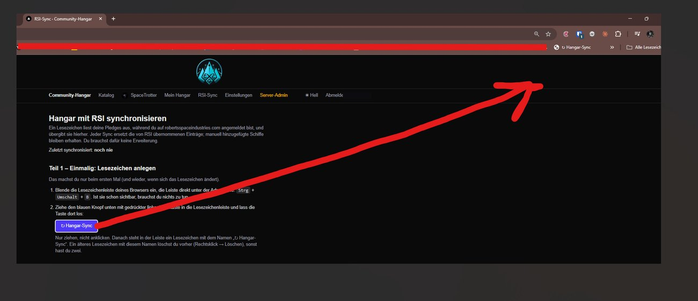
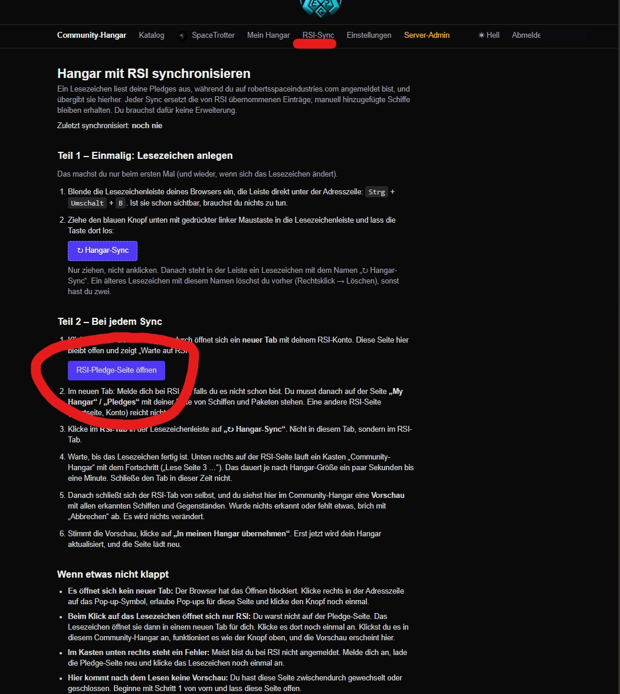
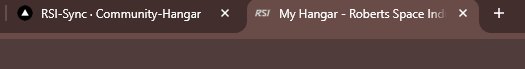
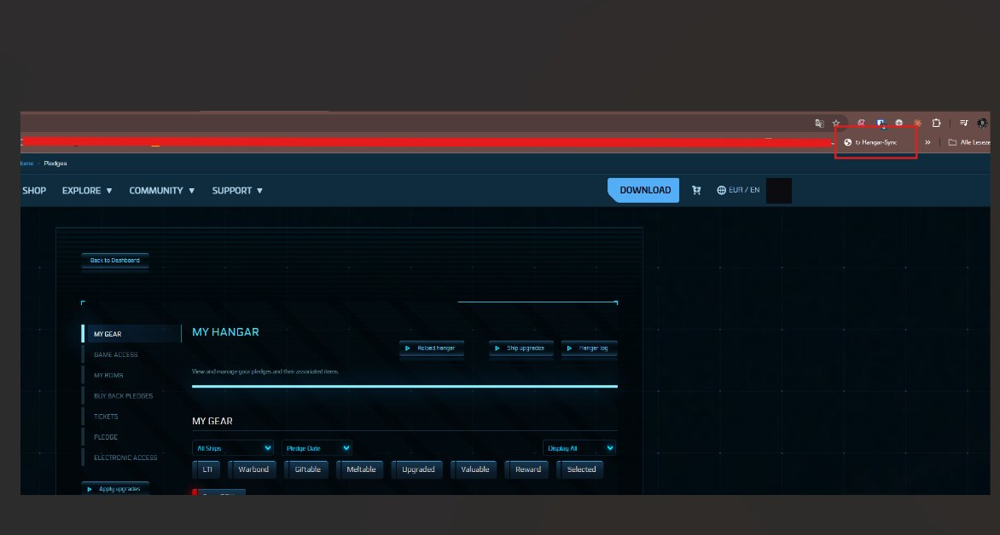
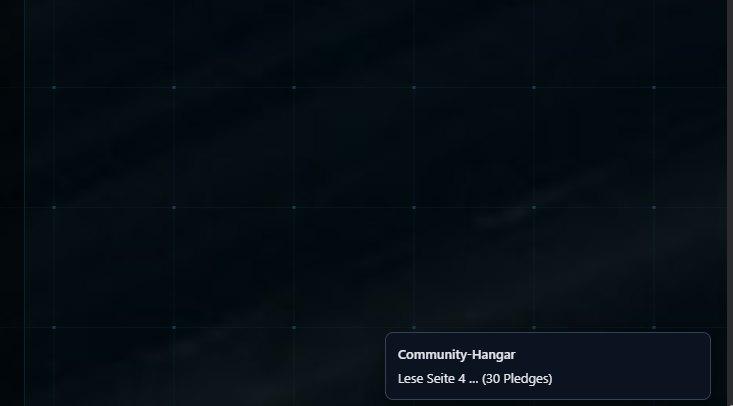
| Aufgabe | Befehl |
|---|---|
| Neue Version holen | docker compose pull && docker compose up -d |
| Logs der App, des Bots ansehen | docker compose logs -f app · docker compose logs --tail 40 bot |
| Katalog sofort abgleichen | docker compose exec app php bin/catalog-sync.php |
| Zugangslisten sofort abgleichen | docker compose exec app php bin/sync-allowlist.php |
Konten ohne Zugangsliste löschen (Vorschau, mit --yes wirklich) | docker compose exec app php bin/purge-former-members.php |
| Schiffsbilder vorab laden | docker compose exec app php bin/warm-images.php |
| Datenbank sichern | docker compose exec db sh -c 'mariadb-dump -u hangar -p"$MARIADB_PASSWORD" hangar' > sicherung.sql |
| Sicherung einspielen | docker compose exec -T db sh -c 'mariadb -u hangar -p"$MARIADB_PASSWORD" hangar' < sicherung.sql |
Nach einer Änderung der .env | docker compose up -d (bei Bot-Werten: docker compose up -d bot). restart liest die .env nicht neu ein. |
| Stoppen (Daten bleiben) | docker compose down |
| Alles löschen (Neuinstallation) | docker compose down -v löscht auch Datenbank und Bilder |
Gesichert werden sollte die Datenbank und die .env (vor allem APP_KEY). Die Schiffsbilder lädt die App bei Bedarf selbst nach; ein eigenes Logo und Hintergrundbild (/design) liegen im selben Volume.
Eine Sicherung enthält die gespeicherten Discord-Tokens der Nutzer: nicht in offene Cloud-Ordner legen.
cd ~/community-manager docker compose pull && docker compose up -dDie App spielt beim Start neue Datenbank-Migrationen selbst ein.
docker compose exec bot node src/register.js --global
docker-compose.yml geändert hat. Deine Kopie übernimmt neue Einstellungen nicht von selbst. Lade die aktuelle Fassung daneben und vergleiche:
curl -o docker-compose.yml.neu https://raw.githubusercontent.com/mackedanz/Community-Manager/main/docker-compose.yml diff docker-compose.yml docker-compose.yml.neuGibt
diff nichts aus, ist alles gleich. Sonst übernimmst du die neue Fassung: mv docker-compose.yml.neu docker-compose.yml, danach docker compose up -d. Neue Einstellungen stehen in der Vorlage .env.docker.example.Die App selbst prüft Anmeldung, Rechte und Eingaben. Die folgenden Punkte betreffen den Betrieb: Server, Proxy und Netzwerk. Sie sind nach Wichtigkeit geordnet. Wie dringend sie sind, hängt davon ab, wo die App läuft:
| Wo läuft die App? | Was heißt das |
|---|---|
| Server im Internet (Mietserver, VPS) | Jeder Punkt unten ist Pflicht. Besonders 16.1: Ohne diese Einstellung ist der App-Port für die ganze Welt offen und umgeht den Proxy. |
| Zuhause hinter einem Router | Von außen erreichbar ist nur, was du im Router weiterleitest. Die Punkte schützen dann vor Geräten im eigenen Netz und vor Fehlern bei der Weiterleitung. |
Der Port 8181 spricht unverschlüsseltes HTTP und gehört nur dem Reverse-Proxy. Wer ihn direkt erreicht, umgeht den Proxy samt Zertifikat und Filtern.
.env HANGAR_BIND=127.0.0.1 ein und starte mit docker compose up -d neu. Danach ist der Port nur noch auf dem Server selbst erreichbar.
Prüfen: ss -ltn | grep 8181 zeigt 127.0.0.1:8181.HANGAR_BIND leer (sonst erreicht der Proxy die App nicht) und erlaube den Port per Firewall nur für die IP des Proxys. Mit Docker greift das übliche ufw nicht von selbst, weil Docker seine Regeln selbst setzt.
Zuverlässig ist die Firewall des Hypervisors oder Routers (z. B. Proxmox-Firewall am Container: eingehend Port 8181 nur von der Proxy-IP, alles andere auf dem Port verwerfen) oder eine Regel in der Docker-Kette:sudo iptables -I DOCKER-USER -p tcp -m conntrack --ctorigdstport 8181 --ctdir ORIGINAL ! -s <PROXY-IP> -j DROP
Diese Regel verschwindet nach einem Neustart, wenn du sie nicht dauerhaft speicherst (z. B. mit iptables-persistent). Prüfe nach jeder Änderung von einem dritten Rechner, dass der Port wirklich zu ist:
curl -m 5 http://<SERVER-IP>:8181/healthz darf nichts liefern. Von der Proxy-IP aus muss es weiter „ok“ geben.
Der größte echte Upload ist der RSI-Import mit bis zu 5 MB. Alles darüber nimmt die App nicht an (Apache lehnt ab 6 MB ab). Damit große Anfragen gar nicht erst bis zur App kommen, begrenze sie auch im Proxy. Im Nginx Proxy Manager: Proxy-Host bearbeiten, den Reiter mit dem Zahnrad öffnen („Advanced“), bei „Custom Nginx Configuration“ eintragen und mit Save speichern:
client_max_body_size 6m;
Prüfen: Eine 7-MB-Anfrage muss mit 413 abgewiesen werden:
head -c 7000000 /dev/zero | curl -s -o /dev/null -w "%{http_code}\n" -X POST -T - https://<DOMAIN>/healthz
HSTS sagt dem Browser, dass die Seite nur noch über HTTPS geöffnet werden darf. Im Nginx Proxy Manager: Proxy-Host, Reiter SSL, HSTS Enabled einschalten und speichern. Schalte es erst ein, wenn HTTPS sicher läuft: Browser merken sich die Einstellung, und bei einem abgelaufenen Zertifikat kommt man dann nicht mehr „mal eben“ per HTTP auf die Seite.
Ein Server, der Anmeldungen per Passwort zulässt, wird im Internet rund um die Uhr durchprobiert, im Heimnetz reicht ein einziges kompromittiertes Gerät. Hinterlege zuerst deinen SSH-Schlüssel (ssh-copy-id benutzer@server) und teste die Anmeldung damit.
Danach in /etc/ssh/sshd_config setzen:
PermitRootLogin prohibit-password PasswordAuthentication no
Dann sudo systemctl reload ssh. Lass dein aktuelles Fenster offen und probiere die Anmeldung in einem zweiten Fenster, bevor du das erste schließt. Prüfen: sudo sshd -T | grep -iE 'passwordauthentication|permitrootlogin'.
docker-compose.yml eine docker-compose.override.yml mit services: db: ports: ["<interne Server-IP>:3307:3306"] an, nur für das interne Netz, nie ins Internet.| Einstellung | Warum |
|---|---|
LOGIN_REQUIRES_ALLOWLIST=1 | Nur Personen auf der Zugangsliste dürfen sich anmelden (siehe Kapitel 5). Ohne sie darf sich jedes Discord-Konto anmelden und ein Konto anlegen. |
ONBOARDING_GUILD_IDS | Nur die eingetragenen Server dürfen per /einrichten eine Orga anlegen. Leer heißt: jeder Server, auf dem der Bot ist. |
| Bot im Portal auf privat | Niemand sonst kann den Bot auf einen eigenen Server einladen (Kapitel 3.5). |
Starkes DB_PASSWORD | Die Datenbank ist nicht von außen erreichbar, ein schwaches Passwort hilft aber bei einem Fehler an anderer Stelle. Ändere es nicht nachträglich in der .env (siehe Kapitel 17), sondern gleich bei der Installation. |
Rechte der .env auf 600 | Dort stehen Geheimnisse (Kapitel 5). |
| Bot-Rechte klein halten | Der Bot hat bewusst kein Administrator-Recht. Gib ihm nur dazu, was fehlt (Kapitel 8.2). |
| Regelmäßig aktualisieren | docker compose pull && docker compose up -d für die App und den Bot, dazu die Updates des Server-Betriebssystems und des Proxys. |
Mit diesen Befehlen prüfst du von einem anderen Rechner aus, ob alles wirkt. <DOMAIN> ist deine Adresse.
| Befehl | Erwartung |
|---|---|
curl -s https://<DOMAIN>/healthz | ok |
curl -m 5 http://<SERVER-IP>:8181/healthz | keine Antwort (Port zu) |
| 7-MB-Anfrage (siehe 16.2) | 413 |
curl -s -o /dev/null -w "%{http_code}\n" https://<DOMAIN>/catalog | 303 (Katalog nur nach der Anmeldung) |
curl -s -o /dev/null -w "%{http_code}\n" https://<DOMAIN>/dev/login | 404 |
docker inspect community-manager-app-1 --format 'mem={{.HostConfig.Memory}} pids={{.HostConfig.PidsLimit}}' | mem=1073741824 pids=300 (auf dem Server; der Containername hängt vom Ordnernamen ab, docker compose ps zeigt ihn) |
| Symptom | Ursache und Lösung |
|---|---|
| Portal: „Private Anwendungen können keinen Standard-Autorisierungslink haben“ | Unter Installation den Installations-Link auf Keine stellen (Kapitel 3.4), dann den Bot erneut privat speichern. |
| Container startet ständig neu („Restarting“) | docker compose logs --tail 40 app lesen. Die Meldung nennt den Grund, z. B. „Fehlende Einstellungen“ (Wert in der .env fehlt). |
| „Datenbank nicht erreichbar“ nach Passwortänderung | DB_PASSWORD wurde nach dem ersten Start geändert. Die Datenbank behält das erste Passwort: das alte wieder eintragen, oder bei leeren Daten docker compose down -v und neu starten. |
/healthz zeigt „502 Bad Gateway“ | Der Proxy erreicht die App nicht: Port, IP und Schema http im Proxy-Host prüfen, docker compose ps (läuft app?). |
| Discord meldet „Invalid redirect_uri“ | Die Redirect-Adresse im Portal muss genau https://<DOMAIN>/api/auth/callback/discord lauten und gespeichert sein. |
| Discord meldet „client_id … snowflake“ | AUTH_DISCORD_ID fehlt oder ist leer. |
/einrichten erscheint nicht | Befehle registrieren (Kapitel 8.1), Bot mit dem Link aus Kapitel 8.2 eingeladen (Scope applications.commands)? Discord mit Strg+R neu laden, es kann ein paar Minuten dauern. |
| „Die Anwendung reagiert nicht“ | Läuft der Bot? docker compose logs --tail 30 bot. Steht im Portal unter „Allgemeine Informationen“ eine Interaktions-Endpunkt-URL, löschen und speichern. |
| Bot startet nicht: „Server Members Intent“ oder „Disallowed intents“ | Im Portal unter Bot den Server Members Intent einschalten (und, wenn BOT_MESSAGE_CONTENT=1 gesetzt ist, auch den Message Content Intent) und speichern, dann docker compose up -d. |
| „Der Bot darf die Mitgliederliste nicht lesen“ | Im Portal unter Bot den Server Members Intent einschalten und speichern. |
| „Dieser Server ist nicht freigeschaltet“ | Die Server-ID in ONBOARDING_GUILD_IDS eintragen, dann docker compose up -d. Prüfe, dass du beim Einladen den richtigen Server gewählt hast. |
| Anmeldung: „nicht auf der Zugangsliste“ | Die Person hat keine der gewählten Rollen, oder der Abgleich lief noch nicht (/abgleichen). Du selbst kommst über SERVER_ADMIN_DISCORD_ID immer herein. |
| Web-App: „Kein Bot-Token eingerichtet“, keine Kanäle in den Auswahllisten | DISCORD_BOT_TOKEN fehlt in der .env, oder der Bot ist nicht auf dem Server. Nach dem Eintragen docker compose up -d. |
| Web-App: Rollen oder Kanäle lassen sich nicht anlegen oder ändern | Dem Bot fehlt ein Recht (zum Beispiel „Kanäle verwalten“), oder seine Rolle steht in der Rollenliste zu weit unten (Kapitel 8.2). Die Seite „Rollen und Rechte“ zeigt, was der Bot darf. |
| Automod tut nichts, die Seite zeigt einen Hinweis zu Message Content | Kapitel 12: Intent im Portal, BOT_MESSAGE_CONTENT=1 in der .env und docker compose up -d bot. restart reicht nicht. |
| Twitch meldet nichts, die Creator-Seite zeigt „Twitch ist im Bot noch nicht eingerichtet“ | Kapitel 13: TWITCH_CLIENT_ID und TWITCH_CLIENT_SECRET in die .env und docker compose up -d bot. Bleibt es still, steht in docker compose logs --tail 40 bot der Grund; die Creator-Seite zeigt „zuletzt geprüft“ oder eine Warnung am Kanal. |
| Beim Seitenladen kurz ein Discord-Fehler (429) | Discord begrenzt Anfragen kurzzeitig, zum Beispiel direkt nach einem Neustart des Bots. Seite neu laden genügt. |
| Ein neuer Befehl erscheint nicht | docker compose exec bot node src/register.js --global, dann Discord mit Strg+R neu laden. |
| Nach einem Update fehlt eine neue Einstellung im Bot | Deine docker-compose.yml ist eine Kopie und kennt neue Variablen nicht. Mit der aktuellen Fassung vergleichen (Kapitel 15, Update einspielen). |
| Es öffnet sich kein neuer RSI-Tab | Der Browser hat das Öffnen blockiert. Pop-ups für die Seite erlauben (Symbol rechts in der Adresszeile) und den Knopf noch einmal klicken. |
| In der App kommt nach dem Lesen keine Vorschau | Du hast die App-Seite zwischendurch gewechselt oder geschlossen. Beginne mit Schritt 1 des Syncs von vorn und lass die App-Seite offen. Prüfe außerdem, dass du das Lesezeichen von deiner Instanz gezogen hast und kein altes auf eine andere Adresse zeigt. |
| Im Fortschrittskasten steht ein Fehler | Meist bist du bei RSI nicht angemeldet. Melde dich an, lade die Pledge-Seite neu und klicke das Lesezeichen noch einmal. |
| Katalog leer | docker compose exec app php bin/catalog-sync.php und die Ausgabe lesen (RSI-Server erreichbar?). |
| Schiffsbilder fehlen anfangs | Normal: Die App lädt sie beim ersten Anzeigen von RSI. Mit bin/warm-images.php vorab laden. |
| Name | Bedeutung |
|---|---|
DOMAIN | Öffentliche Adresse ohne https:// (Pflicht) |
AUTH_DISCORD_ID, AUTH_DISCORD_SECRET | Anwendungs-ID und Client-Geheimnis aus dem Developer Portal (Pflicht) |
APP_KEY | Schlüssel für die gespeicherten Discord-Tokens, mindestens 32 Zeichen, nie ändern (Pflicht) |
DB_PASSWORD | Passwort der Datenbank (Pflicht) |
SERVER_ADMIN_DISCORD_ID | Betreiber (mehrere IDs mit Komma): sieht den Bereich „Server-Admin“ |
COMPOSE_PROFILES=bot | Startet den Discord-Bot |
DISCORD_BOT_TOKEN | Token des Bots; auch die Web-App nutzt es für Kanäle, Rollen und Events |
ONBOARDING_GUILD_IDS | Server, die per /einrichten eine Orga anlegen dürfen |
LOGIN_REQUIRES_ALLOWLIST | 1 = nur Personen auf der Zugangsliste dürfen sich anmelden |
BOT_MESSAGE_CONTENT | 1 = Automod und Nachrichten-Protokoll (Kapitel 12) |
TWITCH_CLIENT_ID, TWITCH_CLIENT_SECRET | Twitch-Live-Meldungen (Kapitel 13) |
HANGAR_PORT, HANGAR_BIND | Port (Standard 8181) und Adresse, an die er gebunden wird (Standard alle; 127.0.0.1 bei Proxy auf demselben Server) |
LEGAL_IMPRINT_URL, LEGAL_PRIVACY_URL | Links zu Impressum und Datenschutzerklärung im Fuß der Seiten (freiwillig) |
CATALOG_SYNC_INTERVAL_SECONDS | Abstand des Katalog-Abgleichs (Standard 7200 = 2 Stunden) |
Eine Übersicht aller Befehle zeigt /hilfe in Discord. Admin-Befehle sehen nur Admins.
| Befehl | Wer darf | Was passiert |
|---|---|---|
/einrichten | Server-Admins | Orga anlegen, RSI-Orga verbinden, Rollen wählen, Zugangsliste abgleichen |
/abgleichen | Admins, Mitglieder mit Nutzungs-Rolle | Zugangsliste sofort abgleichen |
/termine | Mitglieder | Kommende Termine ansehen und mit „Dabei“, „Vielleicht“ oder „Kann nicht“ antworten |
/termin-neu | Planer, Admins | Termin anlegen |
/hangar, /flotte, /wer-hat, /profil | Mitglieder | Eigener Hangar, Flotte der Orga (anonym), wer ein Schiff hat, Profil eines Mitglieds (nur freigegebene Daten) |
/mod, /mod-einstellungen | Moderatoren, Admins | Verwarnen, Timeout, Kick, Bann und aufheben; Moderatoren-Rollen und Protokollkanal |
/automod | Admins | Automatische Moderation einstellen (oder in der Web-App) |
/creator | Admins | YouTube-Kanäle eintragen, entfernen, auflisten (Twitch in der Web-App) |
/recruit | Recruiter, Admins | Fragenkatalog für ein Bewerbungsgespräch ausfüllen; die Übersicht geht in den eingestellten Kanal |
/discord-setup, /serverregeln, /willkommen | Admins | Server aufbauen, Regeln veröffentlichen, Begrüßung festlegen (oder in der Web-App) |
/design | Admins | Logo, Hintergrundbild und Deckkraft der Web-App setzen |
/betreiber | nur SERVER_ADMIN_DISCORD_ID | Alle Orgas ansehen, Server sperren oder löschen |
/ping | alle | Verbindung zu Discord und zur Datenbank prüfen |